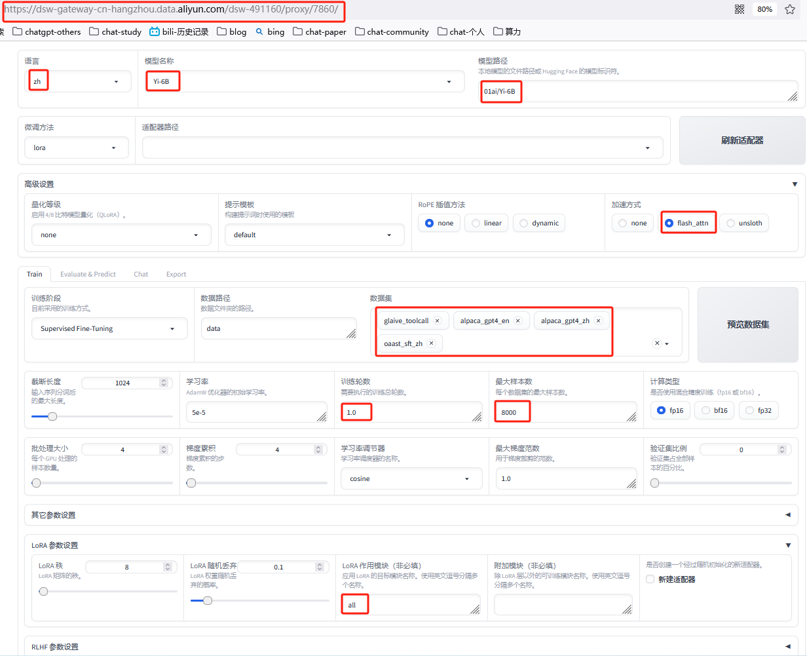
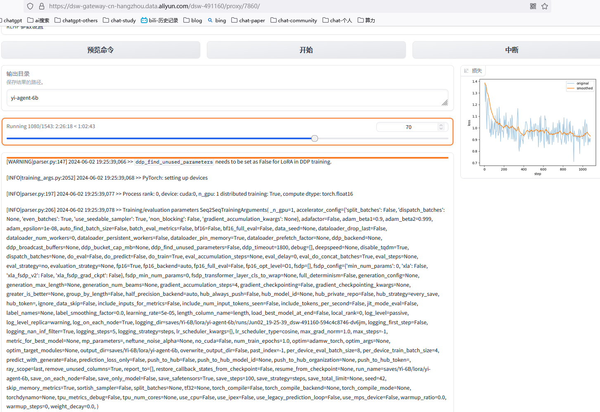

基于微调的Agent - Function Call[1][2] #
- 基座模型
internLM - 微调框架
xtuner


Agent Tuning[3] #
- 基座模型
Yi-6B - Datasets
- 微调框架
LLama-Factory
环境准备 #
# source code
git clone -b v0.7.1 <https://github.com/hiyouga/LLaMA-Factory.git>
git switch -c v0.7.1
cd LLaMA-Factory
# package 安装
conda create -n llama_factory python=3.10
conda activate llama_factory
pip install llmtuner==0.5.1
# 环境变量
export CUDA_VISIBLE_DEVICES=0 # 使用第一块 GPU
export USE_MODELSCOPE_HUB=1 # 使用魔搭社区下载渠道
# 阿里云必须加这句，不然页面会报异常
$ export GRADIO_ROOT_PATH=/${JUPYTER_NAME}/proxy/7860/
# 启动
python -m llmtuner.webui.interface
训练流程 #
# flash-attn 安装
pip install flash-attn --no-build-isolation
pip install modelscope -U
- 训练脚本
# 训练轮数 1.0
CUDA_VISIBLE_DEVICES=0 python src/train_bash.py \\
--stage sft \\
--do_train True \\
--model_name_or_path 01ai/Yi-6B \\
--finetuning_type lora \\
--template default \\
--flash_attn True \\
--dataset_dir data \\
--dataset glaive_toolcall,alpaca_gpt4_en,alpaca_gpt4_zh,oaast_sft_zh \\
--cutoff_len 1024 \\
--learning_rate 5e-05 \\
--num_train_epochs 1.0 \\
--max_samples 8000 \\
--per_device_train_batch_size 4 \\
--gradient_accumulation_steps 4 \\
--lr_scheduler_type cosine \\
--max_grad_norm 1.0 \\
--logging_steps 5 \\
--save_steps 100 \\
--warmup_steps 0 \\
--lora_rank 8 \\
--lora_dropout 0.1 \\
--lora_target all \\
--output_dir saves/Yi-6B/lora/yi-agent-6b \\
--fp16 True \\
--plot_loss True
-
训练配置

-
训练结果

-
效果展示
工具调用 - 查询天气
【1个epoch好像有点问题】

Tuning #
- xtuner 实战 4【补充】用 MS-Agent 数据集 赋予 LLM 以 Agent 能力
- (4)XTuner 大模型单卡低成本微调实战 V
- 单卡 3 小时训练专属大模型 Agent：基于 LLaMA Factory 实战
AgentTuning #
1xx. 基于llama7B的文本嵌入模型ANGLE：兼看Agent微调数据的生成方案 AgentTuning
1xx. LLM之Agent（五）| AgentTuning：清华大学与智谱AI提出AgentTuning提高大语言模型Agent能力
1xx. AgentTuning解读
AgentTuning 实战 #
1xx. 2024年大模型Agent tuning关键技术Fireact, Agent-FLAN, AgentOhana, Agent LUMOS, STE, ETO,MoE, DebateGPT等